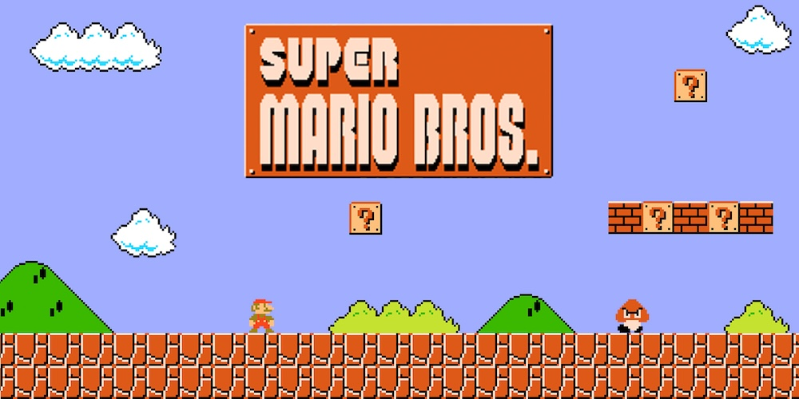

I 5 Videogiochi Più Influenti di Sempre
Il mondo dei videogiochi ha subito trasformazioni radicali nel corso dei decenni, grazie a titoli che non solo hanno segnato la storia, ma hanno cambiato il modo in cui i giochi vengono sviluppati e percepiti. Questi giochi sono riusciti a creare interi generi, innovare meccaniche di gameplay e diventare punti di riferimento per milioni di giocatori. Ecco una classifica dei 5 videogiochi più influenti di sempre, con un'analisi del loro impatto.
1. Super Mario Bros. (1985)
Super Mario Bros., sviluppato da Nintendo e diretto dal leggendario Shigeru Miyamoto, è probabilmente il videogioco più iconico di tutti i tempi. È stato il titolo che ha contribuito a salvare l'industria dei videogiochi dopo la crisi del 1983, introducendo un nuovo standard per i platform 2D.
Caratteristiche: In Super Mario Bros., i giocatori controllano Mario, un idraulico che deve attraversare otto mondi per salvare la Principessa Peach dal malvagio Bowser. Il design dei livelli, la fluidità dei controlli e la precisione delle meccaniche di gioco hanno fissato un nuovo livello di eccellenza nel gaming.
Impatto: Oltre a ridefinire il genere platform, Super Mario Bros. ha gettato le basi per lo sviluppo di franchise di lunga durata. Ha anche dimostrato come un'accurata combinazione di gameplay intuitivo e narrazione semplice potesse catturare l'immaginazione di una vasta platea di giocatori, aprendo la strada alla cultura popolare dei videogiochi.
2. The Legend of Zelda: Ocarina of Time (1998)
Ocarina of Time è considerato uno dei migliori videogiochi di tutti i tempi. È stato il primo titolo della serie Zelda a introdurre un mondo 3D completamente esplorabile, e ha stabilito nuove regole per i giochi d'avventura e d'azione.
Caratteristiche: Ocarina of Time ha portato il concetto di narrazione interattiva a un nuovo livello. I giocatori controllano Link, che viaggia nel tempo per salvare il regno di Hyrule dal malvagio Ganondorf. L'introduzione del sistema di targeting Z-lock ha rivoluzionato i combattimenti in 3D, rendendo il gameplay più preciso e coinvolgente.
Impatto: Il sistema di controllo e il design open-world di Ocarina of Time hanno influenzato intere generazioni di sviluppatori. L'uso della musica come meccanica di gioco, tramite l'ocarina, ha dimostrato come gli elementi artistici potessero essere integrati in modo armonioso nel gameplay. Il gioco ha ispirato la creazione di mondi aperti più vasti e complessi, un concetto oggi centrale nei giochi moderni.
3. Doom (1993)
Doom ha ridefinito il genere degli sparatutto in prima persona (FPS) e ha contribuito alla nascita della cultura dei giochi multiplayer. Sviluppato da id Software, Doom ha mostrato le potenzialità del PC come piattaforma di gaming e ha gettato le basi per molti degli FPS che conosciamo oggi.
Caratteristiche: Doom metteva i giocatori nei panni di un marine spaziale che combatteva contro orde di demoni in ambienti tridimensionali. Il gameplay frenetico, le armi potenti e il livello di difficoltà crescente lo resero immediatamente popolare. Il gioco introdusse anche il concetto di modding, permettendo ai giocatori di creare i propri livelli.
Impatto: Doom ha avuto un'influenza enorme non solo per il genere FPS, ma anche per la nascita dei giochi multiplayer online. Inoltre, è stato uno dei primi giochi a mostrare il potenziale del gaming competitivo, dando vita a una scena di tornei che continua ancora oggi.
4. Grand Theft Auto III (2001)
Grand Theft Auto III ha cambiato per sempre il modo in cui i giochi open-world vengono concepiti, offrendo ai giocatori una libertà senza precedenti in un mondo tridimensionale completamente interattivo. Sviluppato da Rockstar Games, GTA III ha aperto una nuova era per i giochi sandbox.
Caratteristiche: In GTA III, i giocatori esplorano Liberty City, un'enorme città piena di missioni, veicoli e personaggi. La libertà di movimento, unita a una trama coinvolgente e una colonna sonora dinamica, ha reso questo gioco una pietra miliare. GTA III è stato uno dei primi titoli a combinare con successo azione, guida e narrazione in un unico pacchetto coeso.
Impatto: Il gioco ha definito il genere open-world, ispirando numerosi titoli successivi come Assassin's Creed, Watch Dogs e Red Dead Redemption. La sua enfasi sulla libertà di scelta e sull'esplorazione ha contribuito a ridefinire le aspettative dei giocatori rispetto a ciò che un videogioco poteva offrire.
5. Minecraft (2011)
Minecraft, sviluppato inizialmente da Markus Persson, ha portato una rivoluzione nel mondo dei giochi di costruzione e creatività. Questo gioco sandbox ha permesso ai giocatori di creare mondi completamente personalizzati utilizzando blocchi pixelati, promuovendo un’esperienza di gioco aperta e senza confini.
Caratteristiche: In Minecraft, i giocatori esplorano mondi generati proceduralmente, raccolgono risorse e costruiscono strutture complesse. La sua modalità di gioco è estremamente flessibile, consentendo esperienze creative, di sopravvivenza e cooperative. Il design minimalista e l’approccio open-ended hanno catturato l'immaginazione di milioni di persone.
Impatto: Minecraft ha influenzato un’intera generazione di giochi creativi e ha aperto la strada a nuove forme di collaborazione tra i giocatori. Ha anche rivoluzionato la didattica, entrando nelle scuole come strumento educativo. La sua capacità di stimolare la creatività e la cooperazione online ha contribuito a ridefinire i confini tra videogiochi e strumenti creativi.
Questi cinque titoli hanno segnato tappe fondamentali nell'evoluzione del gaming, trasformando non solo il modo in cui i giochi vengono sviluppati, ma anche il modo in cui i giocatori vivono l’esperienza di gioco. Ogni titolo ha aperto nuove strade e ha lasciato un segno indelebile nella cultura popolare.